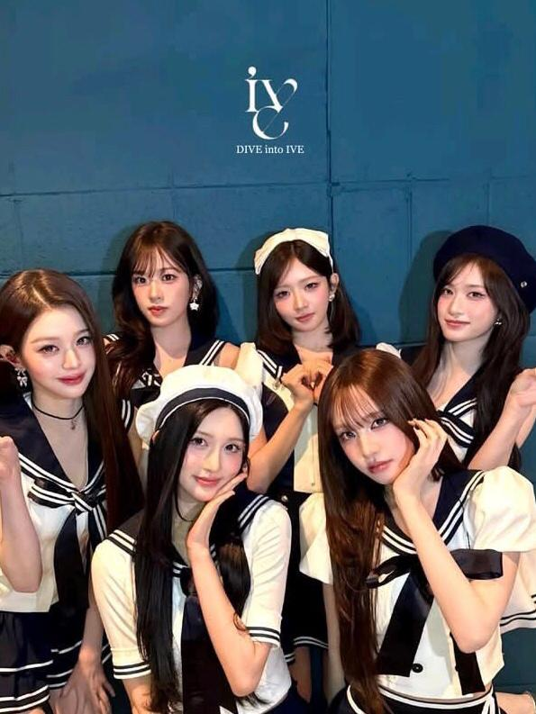
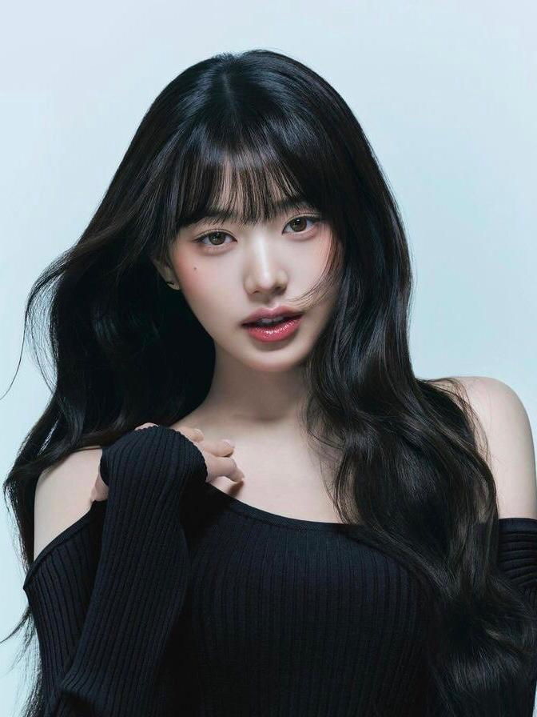
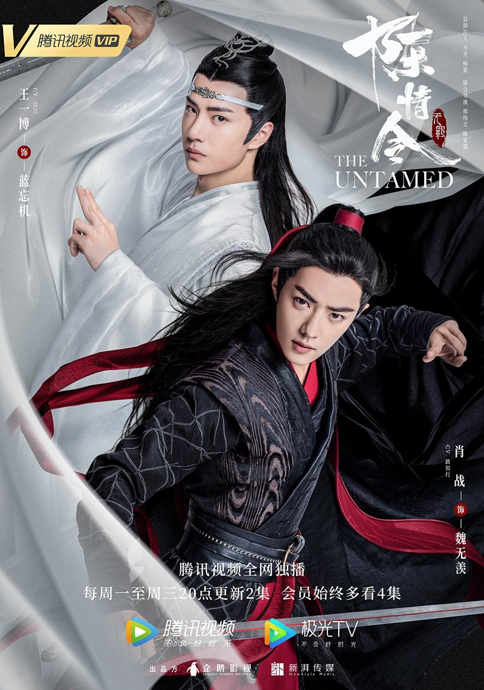

CuriositiesInterests Overview K-Pop Culture Immersive StoriesClick any link above to jump instantly to that content row block area |
My Personal InterestsExploring creative media gives me inspiration outside of class. Below is a detailed look into the music and storytelling formats that capture my curiosity. K-Pop Culture
Favorite Group: IVE   My All-Time Favorite Drama
 Drama Title: The UntamedKey Actors Involved: Wang Yibo, Xiao Zhan The story follows Wei Wuxian (Xiao Zhan) and Lan Wangji (Wang Yibo), two talented disciples of respected clans, meet during cultivation training and accidentally discover a secret carefully hidden for many years. Taking on the legacy of their ancestors, they decide to rid the world of the ominous threat. But in a dramatic turn of events, Wei Wuxian dies. Sixteen years later, Wei Wu Xian is brought back to life through a self-sacrificing ritual. He conceals himself behind a mask and assumes the identity of his summoner. Soon, Wei Wuxian reunites with Lan WangJi and they start working together to solve the mysteries of the present and unravel the truth behind the events in the past. The Untamed Highlight Clip |